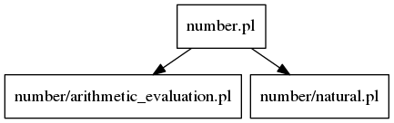

Documentation for Prolog file: number.pl
File used to include all predicate related to numbers. This includes naturals, integers, rationals and irrationals.

Included files:
number/natural.html
number/arithmetic_evaluation.html
Predicates:
Predicate Details:
Generated with DYP